ECE 499 Capstone — Group 17 — University of Victoria
This is a tone, scroll to delete it.
An adaptive active noise cancellation system built on an eight-driver phased array, the FxLMS algorithm, and a fully custom PCB.
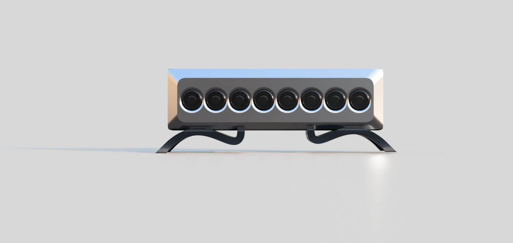
Eight drivers act as a phased array, steering a beam of destructive interference at the listener. A feedback microphone at the listening position closes the loop, and the FxLMS algorithm adapts in real time.
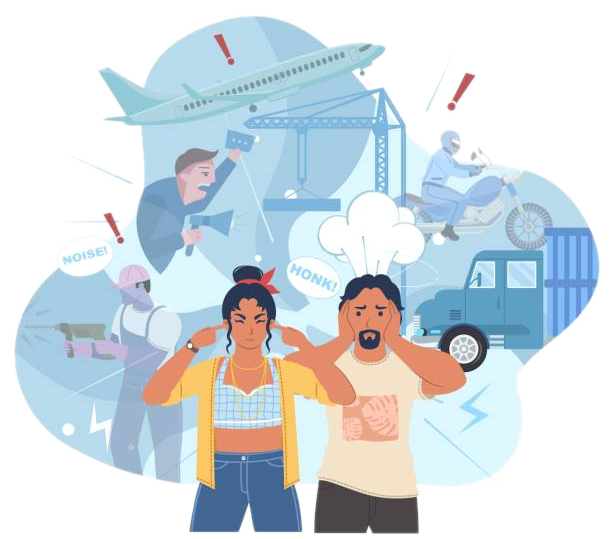
Background
Noise pollution in professional settings negatively affects quality of life
for people with sensory processing conditions, and causes irreversible hearing
damage to workers in construction, industrial, and generator environments.
Passive barriers fail at low frequencies. Consumer headphones protect only one
listener. Laboratory ANC systems demand high channel counts and significant
infrastructure. The Noise Deleter bridges the gap: commodity hardware,
self-contained, under 10 W.
Everyday noise in care facilities causes significant distress for people with sensory processing disorders.
Workers at construction and industrial sites are exposed to noise exceeding safe thresholds, causing permanent loss.
Hold paramount the safety, health, and welfare of the public and the promotion of health and safety in the workplace.
Existing solutions are either too limited (headphones, foam) or too complex and expensive (lab-grade spatial ANC) for real deployment.
The Team
Five electrical engineering students from the University of Victoria.
Each member owned a distinct subsystem from concept through testing.
Faculty Supervisor
Dr. Peter Driessen
Dept. of ECE, UVic
Design
Four interdependent subsystems — software, hardware, firmware, and enclosure — designed and validated independently before closed-loop integration. Viewed from above, the enclosure's silhouette is intentionally shaped after the curved body of a guitar.
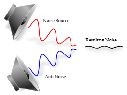
Eight Dayton Audio CE32A-4 drivers (32 mm) spaced 4.3 cm apart. At 2 kHz the array is ~1.5 wavelengths long, producing a beam half-power width of approximately 34 degrees.
One complex weight per speaker (8 total) updated every sample at 48 kHz. The FxLMS rule adjusts each weight in the direction that minimizes the error microphone signal, scaled by the measured secondary path.
All amplifier, microphone, microcontroller, and power-supply circuits on one board. Careful trace and via design minimizes EMI between Class-D amplifier outputs and sensitive MEMS microphone inputs.
Reference mic near the disturbance source and error mic at the listening position feed back into the adaptive controller via I²S, continuously driving residual error toward zero.
Custom enclosure designed in CAD and manufactured in-house. Houses the speaker array, PCB, wire routing channels, and a separate mount for the feedback microphone.
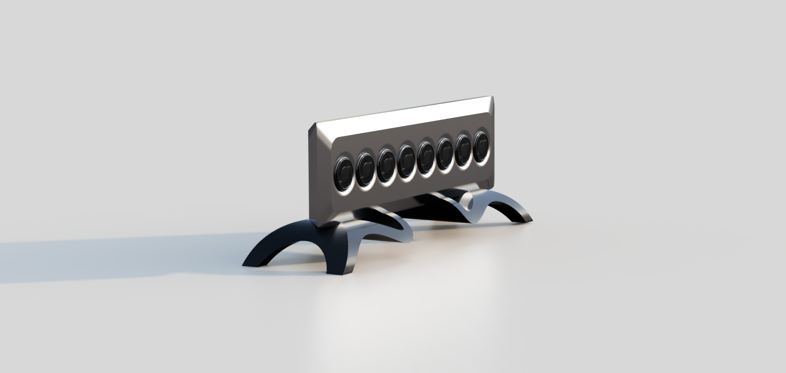
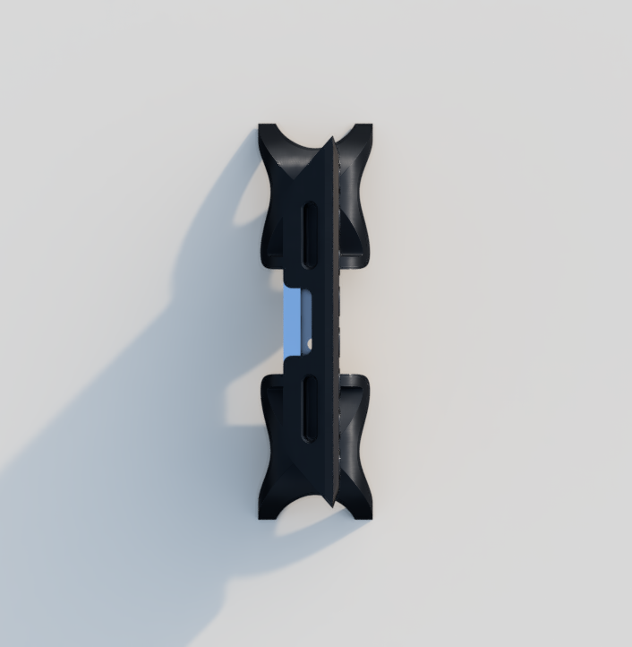
The Prototype
From CAD to bench to the field — the finished device, its machined-look 3D-printed enclosure, and the wiring that brought it to life.
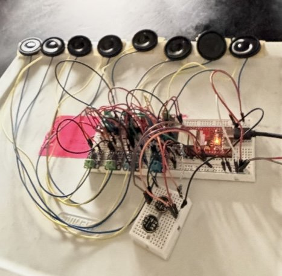
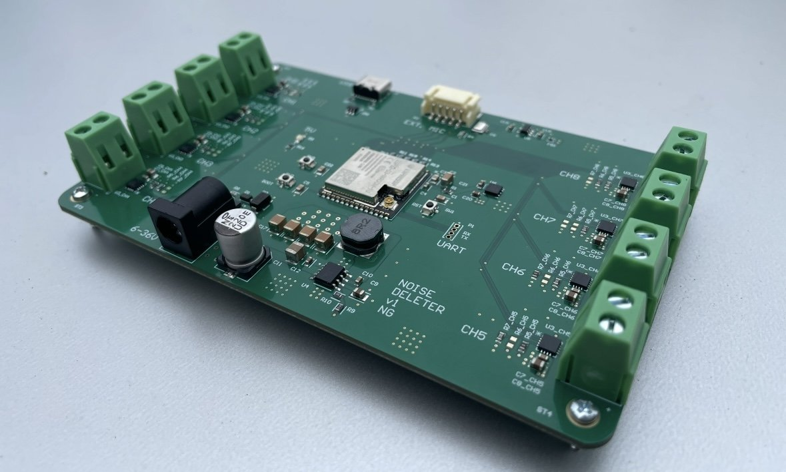
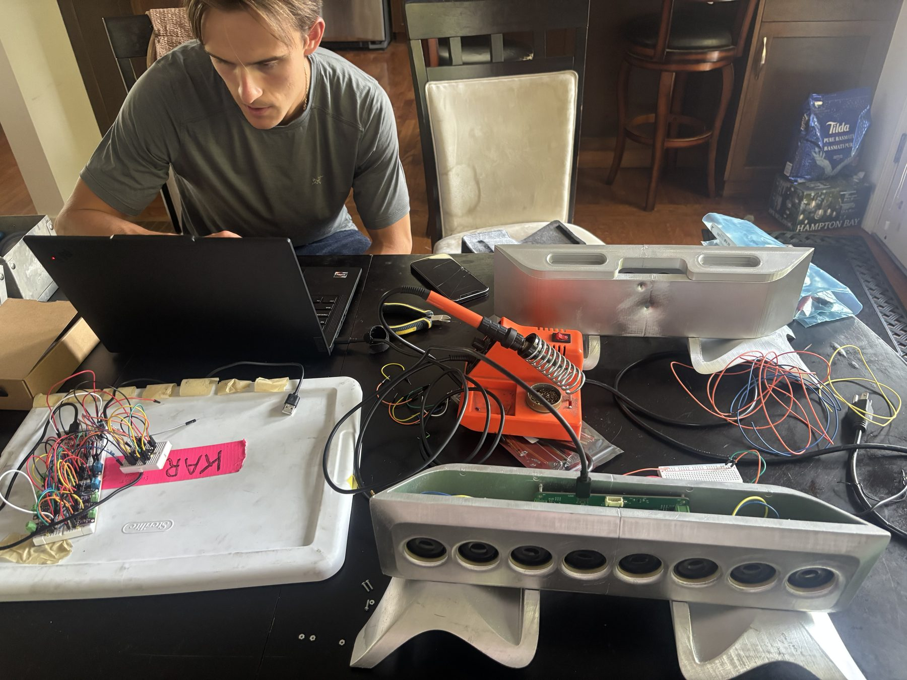
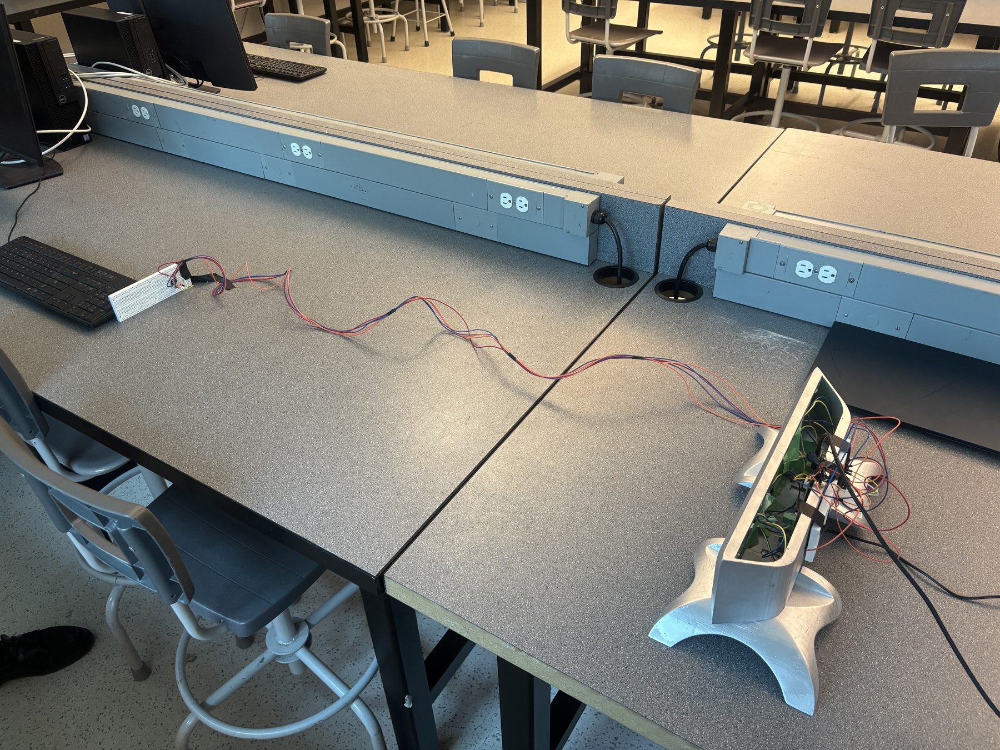
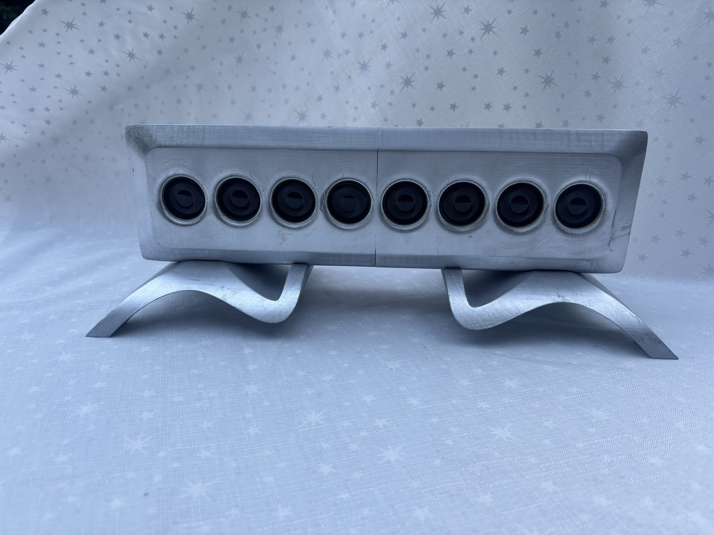
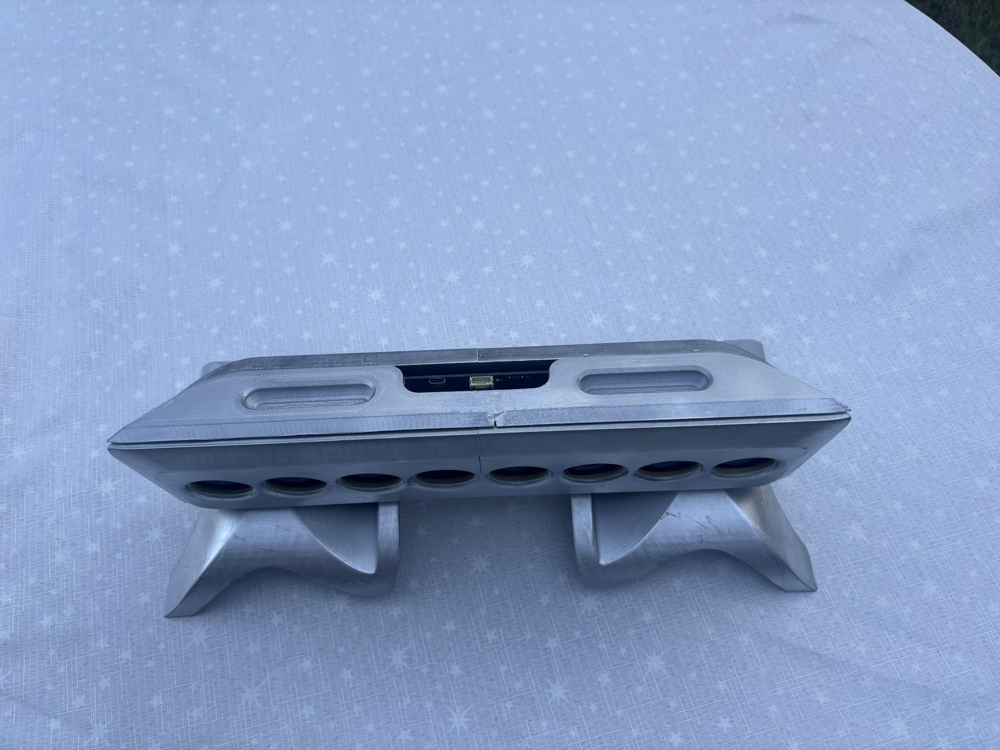
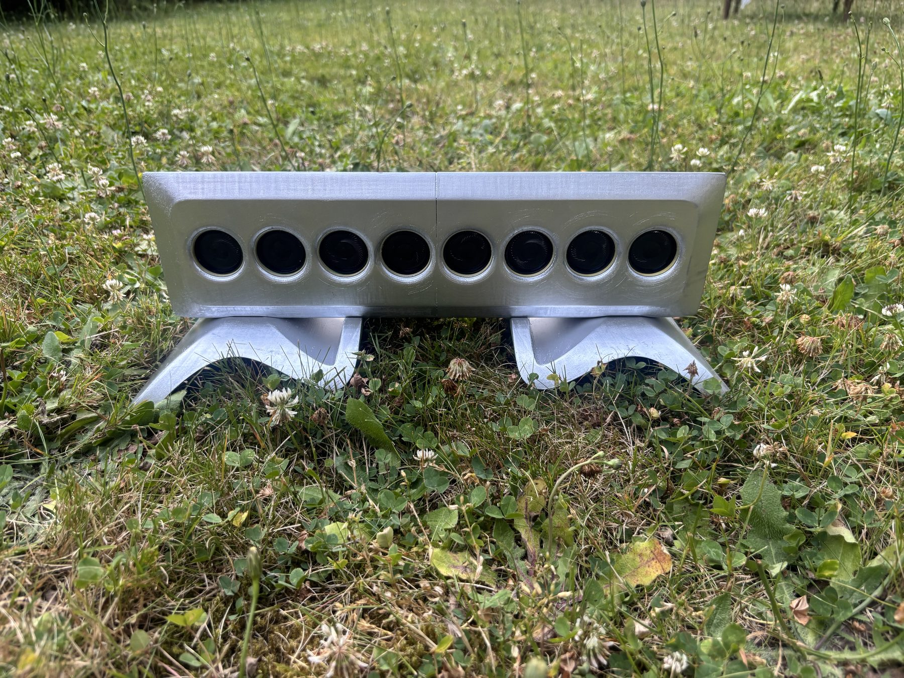
Results & Findings
Four staged milestones, ten validation tests, and a working adaptive canceller — here is where the project landed.
Measured input tone and played a matching tone. Verified I²S interfacing of all system peripherals and basic DSP function.
PassedCancelled a single input tone, demonstrating destructive waveform generation and measurable attenuation at the error microphone.
AchievedPartially achieved. Active waveform generation demonstrated; constrained by available testing time after PCB arrival.
PartialRequires automatic frequency estimation and multi-tone tracking — planned for the next development stage.
Future Work| Test | Purpose | Result |
|---|---|---|
| Single speaker output | Amplifier comms | Pass |
| Sequential tone gen. | Channel mapping | Pass |
| Microphone input | I²S mic operation | Pass |
| TDM amplifier output | Multi-speaker audio | Pass |
| Stereo mic configuration | L/R addressing | Pass |
| Echo machine loopback | Full audio pipeline | Pass |
| PCB power rails | 5 V and 3.3 V supply | Pass |
| FxLMS convergence | Adaptive stability | Pass |
| Divergence recovery | Fault detection & mute | Pass |
| 15 dB target | Full objective | Partial |
Acknowledgments
The Noise Deleter would not have been possible without the support of the following people and organizations.
Expert advice on project methodology and active noise control theory throughout the term.
Consistent mentorship and project guidance throughout the capstone term.
Hands-on technical assistance at critical stages of the project development.
Financial support enabling the custom PCB, speaker components, and test equipment.
ECE 499 class facilitation and guidance provided to the team throughout the year.
Timely manufacturing and reliable delivery of the team's custom printed circuit board.
Generously loaned consumable supplies and testing equipment throughout the project.
Facilitated the ECE 499 lab space and kept it accessible for the team throughout the project.
Patience and encouragement that sustained the team through a demanding capstone year.
Final Report
Complete technical documentation covering design specifications, hardware and software methodology, testing results, and conclusions.